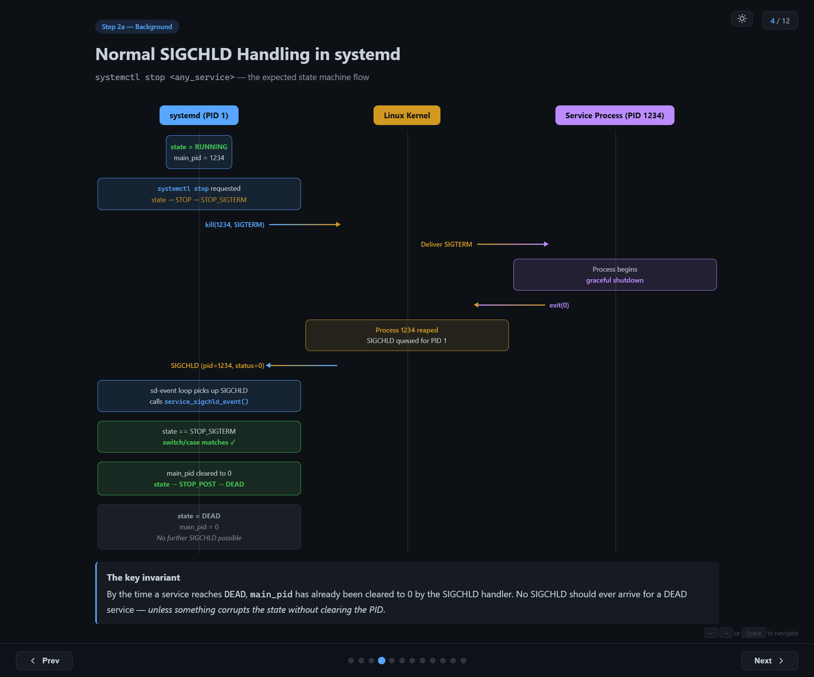
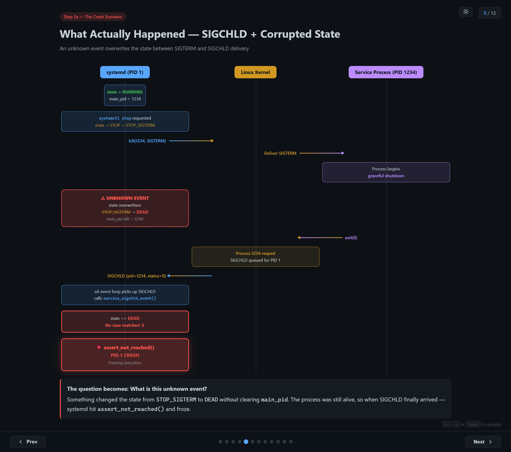
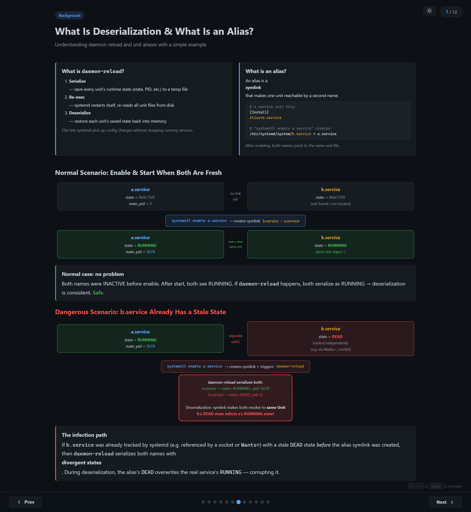
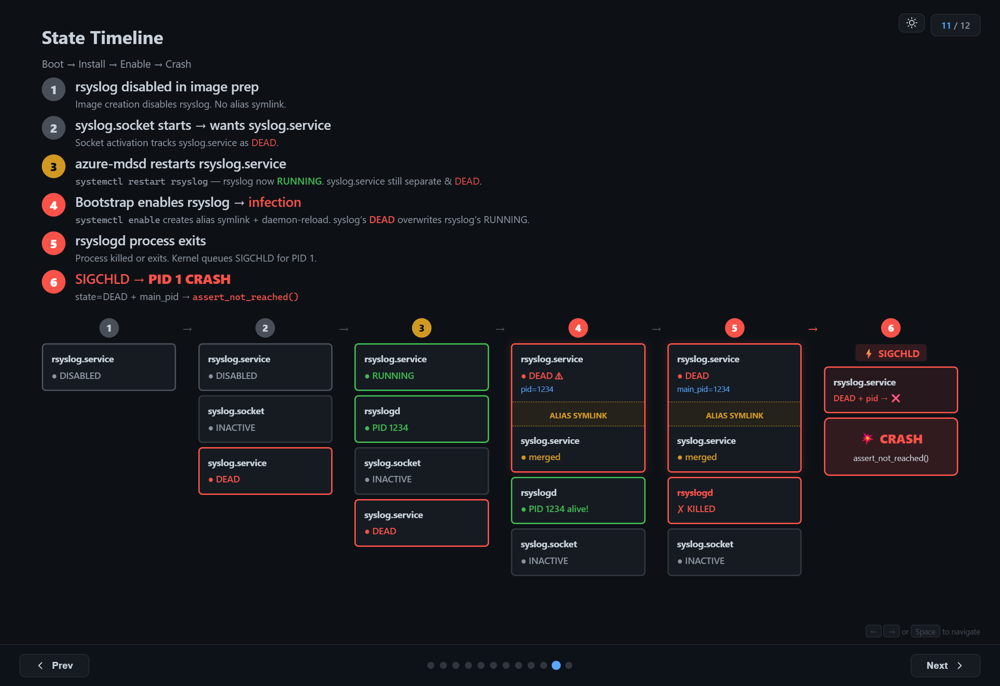

The Systemd Bug
29 VMs crashed. 1,600+ VMs were mid-rollout. PID 1 — systemd itself — hit assert_not_reached() and froze. Every systemctl command after that returned "Transport endpoint is not connected." The VMs were effectively bricked.
This is the story of how we tracked down a race condition in systemd's unit alias deserialization — a bug that only triggers under a specific sequence of operations, depends on hashmap iteration ordering, and is completely invisible after a reboot.
Step 1: Finding the Crash
The first reports came in as a rolling upgrade failure. The bootstrap script that configures services on fresh VMs was failing repeatedly:
...
Created symlink /etc/systemd/system/syslog.service → /usr/lib/systemd/system/rsyslog.service.
Restarting service rsyslog.service
Failed to restart rsyslog.service: Transport endpoint is not connected
Failed to activate service 'org.freedesktop.systemd1': timed out (service_start_timeout=25000ms)
... (5 retries, all fail) ...
Aborting
The error message "Transport endpoint is not connected" is misleading. It suggests a D-Bus communication issue, maybe a socket problem. But the real issue was far worse: systemd (PID 1) itself had crashed. Every subsequent systemctl command failed because there was no init process to talk to.
Digging into the journal logs from the previous boot (journalctl -b -1) revealed the actual crash sequence:
02:37:20 systemd[1]: Stopping rsyslog.service... ← stop begins
----------- rsyslog SIGCHLD pending -----------
02:37:21 systemd[1]: Reloading requested from PID 3267 ← daemon-reload
systemd[1]: Reloading finished in 204 ms.
systemd[1]: service_sigchld_event() ABORT ← SIGCHLD arrives
systemd[1]: Freezing execution. ← PID 1 CRASH
It's a self induced crash. Systemd developers don't expect the condition to reach that code. So, they introduced a self-freezing instruction there. It was not there prior to version 254. So, this condition would have been silently ignored in older versions.
Step 2: Reading the Source Code
The crash message pointed directly to service_sigchld_event() in src/core/service.c. Here's the simplified version of the code:
// src/core/service.c — systemd 255 (simplified)
static void service_sigchld_event(Unit *u, pid_t pid, int code, int status) {
Service *s = SERVICE(u);
if (s->main_pid.pid == pid) {
s->main_pid.pid = 0;
switch (s->state) {
case SERVICE_START:
case SERVICE_START_POST:
/* handle start completion */ break;
case SERVICE_RUNNING:
/* handle process exit */ break;
case SERVICE_STOP:
case SERVICE_STOP_SIGTERM:
case SERVICE_STOP_SIGKILL:
/* handle normal stop */ break;
default:
assert_not_reached(); // line 3863 — CRASH
}
}
}
The function handles SIGCHLD — the signal the kernel sends to a parent process when a child exits. systemd, as PID 1, receives SIGCHLD for every service process it manages.
The switch statement covers all legitimate states a service can be in when its main process exits: starting, running, or being stopped. But when the state is something else — like SERVICE_DEAD — it hits the default branch and calls assert_not_reached().
For PID 1, an assertion failure is catastrophic. There's no parent process to catch it. systemd freezes execution, and the entire system becomes unresponsive.
The Impossible State
The crash tells us something that shouldn't be possible: a service's state was SERVICE_DEAD, but main_pid still held a valid PID. A dead service should never own a running process. systemd treats this contradiction as a logic error — hence the assertion.
But how did we get here?
Normal SIGCHLD Handling
To understand the bug, you first need to understand the normal flow when you stop a service:

- Initial state: service is
RUNNING,main_pid = 1234 systemctl stoprequested: state transitions toSTOP→STOP_SIGTERM- systemd sends
kill(1234, SIGTERM)to the kernel - Kernel delivers SIGTERM to the service process
- Process begins graceful shutdown and eventually calls
exit(0) - Kernel reaps process 1234 and queues SIGCHLD for PID 1
- systemd's event loop picks up SIGCHLD, calls
service_sigchld_event() switchmatchesSTOP_SIGTERM— the expected casemain_pidcleared to 0, state transitions toSTOP_POST→DEAD
The key invariant: by the time a service reaches DEAD, main_pid has already been cleared to 0 by the SIGCHLD handler. No SIGCHLD should ever arrive for a DEAD service — unless something corrupts the state without clearing the PID.
The Crash Scenario
What actually happened was different. Between steps 2 and 6, something intervened:

- Service is
RUNNING,main_pid = 1234 systemctl stop→ state becomesSTOP_SIGTERM- systemd sends
SIGTERMto the process - Process begins graceful shutdown...
- ⚠ UNKNOWN EVENT — state is overwritten from
STOP_SIGTERM→DEAD, butmain_pidstays1234 - Process exits, kernel queues SIGCHLD
- systemd receives SIGCHLD, calls
service_sigchld_event() state == DEAD— no case matches!assert_not_reached()→ PID 1 CRASH
The question became: what is this unknown event?
Step 3: Building a Hypothesis
We needed to find an operation that:
- Overwrites a unit's
statefield (e.g.,STOP_SIGTERM→DEAD) - Does not clear
main_pid
We launched GitHub Copilot on systemd code base and asked above question. "Analyse the code and get me where the state transition is possible without updating the pid". Below are the output we got from the agent.
Direct state setter? State transitions within systemd always go through service_set_state(), which clears main_pid when entering DEAD. This path is safe.
Unit reload / re-read config? Re-reading unit files updates configuration but does not overwrite runtime state or PID tracking. This path is safe too.
Deserialization (daemon-reload)? During daemon-reload, systemd serializes all unit states to a file, re-execs, and deserializes them back. The deserialized state is written directly to s->deserialized_state — bypassing service_set_state()!
Unlike normal state transitions, deserialization writes state directly into the unit object without going through the state setter function. This means it can set a state like DEAD without the usual cleanup that would clear main_pid.
Deserialization was our suspect. But how exactly does it corrupt the state? To understand that, we need to understand aliases.
Background: daemon-reload and Unit Aliases
What is daemon-reload?
When you run systemctl daemon-reload, systemd does three things:
- Serialize — save every unit's runtime state (state, PID, etc.) to a temp file
- Re-exec — systemd restarts itself, re-reads all unit files from disk
- Deserialize — restore each unit's saved state back into memory
This lets systemd pick up config changes without stopping running services. It's an elegant design — unless the serialized data contains contradictions.
What is an alias?
An alias is a symlink that makes one unit reachable by a second name:
# a.service unit file:
[Install]
Alias=b.service
# "systemctl enable a.service" creates:
# /etc/systemd/system/b.service → a.service
After enabling, both names point to the same unit file.
The Normal Case
When both names are fresh (neither has been started or tracked), everything works fine:
a.serviceandb.serviceare bothINACTIVEsystemctl enable a.servicecreates the symlinkb.service → a.servicesystemctl start a.service→ both names resolve to the same Unit object, state =RUNNING- If
daemon-reloadhappens, both serialize asRUNNING→ deserialization is consistent
No problem.
The Dangerous Case
But what if b.service was already tracked by systemd before the alias was created?
This can happen if something else references b.service — for example, a socket unit (b.socket) that implicitly depends on b.service via socket activation. systemd starts tracking b.service as a separate unit with state DEAD (because it can't find a unit file for it).
Now you have:
a.service—RUNNING,main_pid = 5678b.service—DEAD(tracked independently via socket dependency)
When systemctl enable a.service creates the alias symlink and triggers daemon-reload:
- systemd serializes both units with their divergent states:
a.service → state=RUNNING, pid=5678b.service → state=DEAD, pid=0
- During deserialization, the alias symlink makes both names resolve to the same Unit object
- b's
DEADstate overwrites a'sRUNNINGstate
The result: a.service now has state=DEAD but main_pid=5678 — the process is still alive! The next SIGCHLD for that PID triggers the assertion and crashes PID 1.

Step 3: Reproducing the Bug
To confirm the hypothesis, we built a minimal reproduction using two unit files:
a.service — the real service (long-running):
[Unit]
Description=Demo service A
[Service]
ExecStart=/bin/sleep 600
Restart=no
[Install]
WantedBy=multi-user.target
Alias=b.service
b.socket — implicitly depends on b.service (socket activation):
[Unit]
Description=Demo socket B
[Socket]
ListenStream=/run/b.sock
[Install]
WantedBy=sockets.target
The key: b.socket inherently triggers b.service. systemd tracks b.service as not-found / DEAD until the alias from a.service becomes effective.
The Reproduction Steps
# Step 1: Install a.service and b.socket, no b.service yet
$ cp a.service /etc/systemd/system/
$ cp b.socket /etc/systemd/system/
$ systemctl daemon-reload
# Step 2: Start b.socket → implicit dep on b.service makes systemd track b as DEAD
$ systemctl start b.socket
$ systemctl show b.service --property=ActiveState → inactive (tracked!)
# Step 3: Start a.service → RUNNING with a PID
$ systemctl start a.service
$ systemctl show a.service --property=MainPID → 4567
$ systemctl show a.service --property=ActiveState → active
# Step 4: Enable a.service → creates symlink b.service → a.service + daemon-reload
$ systemctl enable a.service
# Created symlink /etc/systemd/system/b.service → .../a.service
# Step 5: Check — state INFECTED!
$ systemctl show a.service --property=ActiveState → inactive ← was RUNNING!
$ systemctl show a.service --property=MainPID → 4567 ← PID still set!
$ ps -p 4567 → sleep 600 ← still alive!
# Step 6: Kill PID → SIGCHLD → CRASH
$ kill 4567 → systemd[1]: Freezing execution.
There's a wrinkle: whether b.service is deserialized after a.service depends on hashmap iteration order, which is randomized per process. You might need to run systemctl daemon-reexec to re-seed the hash and retry if the corruption doesn't happen on the first attempt. This is what makes the bug non-deterministic — the same sequence of operations might crash on one VM but not another.
Step 4: Finding the Infected Service in Production
Reproducing in a lab is one thing. Finding which service was actually infected on the crashed production VMs was harder. The corrupted state is transient — it only exists in the brief window between daemon-reload and the next restart. After a reboot, the evidence is gone.
Attempt 1: Boot Script Detection
We added a boot script to detect the impossible state:
#!/bin/bash — detect_infected_service.sh (runs at boot)
for unit in $(systemctl list-units --type=service --all --no-legend \
| awk '{print $1}'); do
state=$(systemctl show "$unit" --property=ActiveState --value)
pid=$(systemctl show "$unit" --property=MainPID --value)
if [[ "$state" == "inactive" || "$state" == "dead" ]] \
&& [[ "$pid" -gt 0 ]]; then
echo "INFECTED: $unit state=$state main_pid=$pid"
fi
done
Result: nothing found. By the time the VM fully boots, the service has likely been restarted multiple times by other scripts. The infection only exists in that brief window.
Attempt 2: Duplicate Process Detection
Then we had a key insight: when systemd thinks a service is DEAD but start is called again, the old process (from the infected state) is still running. systemd detects a duplicate main PID and logs an error before killing the old process. Only the second restart actually starts a fresh process.
# Search for duplicate PID detection in journal
$ journalctl -b -1 | grep "Found left-over process"
systemd[1]: rsyslog.service: Found left-over process 1234 (rsyslogd)
which is already a command process of rsyslog.service.
Refusing.
Found it: rsyslog.service. The "Found left-over process" log proves that when systemd tried to restart rsyslog, it found a leftover process from the corrupted state — a process systemd thought shouldn't exist (state=DEAD) but was actually still running.
Step 5: Connecting the Dots
With rsyslog.service identified as the infected service, everything clicked. Let's look at its unit file:
# /usr/lib/systemd/system/rsyslog.service
[Unit]
Description=System Logging Service
Requires=syslog.socket
[Service]
Type=notify
ExecStart=/usr/sbin/rsyslogd -n -iNONE
[Install]
WantedBy=multi-user.target
Alias=syslog.service ← the alias!
rsyslog.service has Alias=syslog.service. This maps exactly to our a.service / b.service experiment:
| Experiment | Production |
|---|---|
a.service (real service, RUNNING) |
rsyslog.service (RUNNING, PID 1234) |
b.service (alias, tracked as DEAD) |
syslog.service (DEAD, tracked via syslog.socket) |
b.socket (triggers tracking of b) |
syslog.socket (triggers tracking of syslog.service) |
The Full Timeline
Here's the complete sequence of events that led to the crash on the production VMs:
1. Image preparation: rsyslog is disabled in the VM image. The alias symlink (syslog.service → rsyslog.service) does not exist.
2. Boot — syslog.socket starts: Socket activation pulls in syslog.service as a dependency. Since there's no unit file or symlink for syslog.service, systemd tracks it as a separate unit with state DEAD.
3. azure-mdsd restarts rsyslog: A monitoring agent runs systemctl restart rsyslog.service. rsyslog is now RUNNING with a PID. But syslog.service is still a separate unit, still DEAD.
4. Bootstrap script enables rsyslog — infection: The bootstrap script runs systemctl enable rsyslog.service, which creates the alias symlink and triggers daemon-reload. During deserialization, syslog.service's DEAD state overwrites rsyslog.service's RUNNING state. Now rsyslog has state=DEAD but main_pid still points to the living rsyslogd process.
5. rsyslogd process exits: The bootstrap script continues and stops/restarts rsyslog. The old rsyslogd process receives SIGTERM and exits. The kernel queues SIGCHLD for PID 1.
6. SIGCHLD → PID 1 CRASH: systemd's event loop picks up the SIGCHLD. It finds state=DEAD with a valid main_pid. The switch statement has no matching case. assert_not_reached(). PID 1 freezes. The VM is bricked.

All the sequence should happen in order in a specific time window to experience the crash. If any one misses, we'll not see the issue. That is the reason why we saw this crash only on 29 machines out of 1600. And that was the reason which made this debugging so complex.
Lessons Learned
Misleading error messages are the norm, not the exception. "Transport endpoint is not connected" had nothing to do with transport endpoints. PID 1 was dead. Always check systemctl status and journalctl before trusting error messages at face value.
Transient state corruption is hard to catch. The infected state only existed for a few seconds between daemon-reload and the next service restart. Boot-time detection scripts couldn't see it. We had to rely on indirect evidence — the "Found left-over process" log — to identify the victim. That single line of log saved us the big time.
Non-deterministic bugs need statistical thinking. The same bootstrap script, the same VM image, the same systemd version — but only ~2% of VMs crashed. Hashmap iteration order is the kind of non-determinism that makes you question your sanity until you understand the mechanism. Building a hypothesis and looking for evidences is the better approach in these scenarios.
The root cause: According to me it's not a bug of systemd. When the user creates a situation of two unit files with two different states and ask systemd to converge them, there is no way for systemd to pick the correct state every time. The trigger: systemctl enable + daemon-reload while the aliased service is running and the alias name was previously tracked independently. The result: PID 1 crash, VM freeze.
I presented a talk about this issue in Linux Kernel Meetup, Bangalore. It was well received by the audiences and created a lot of discussion.
{kind=link}